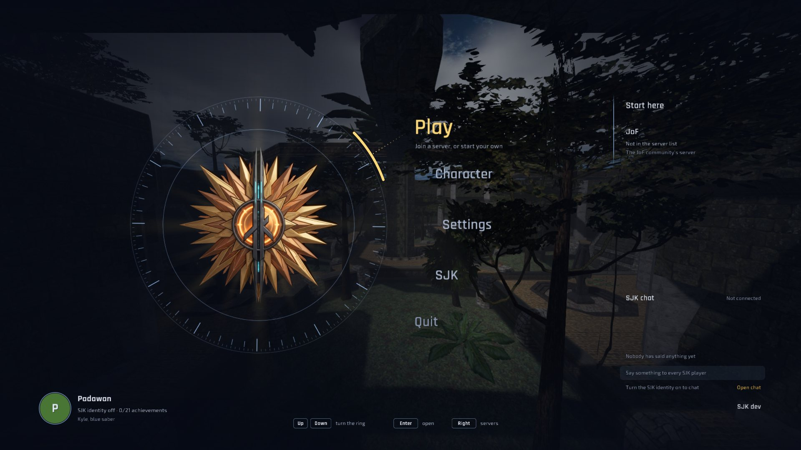
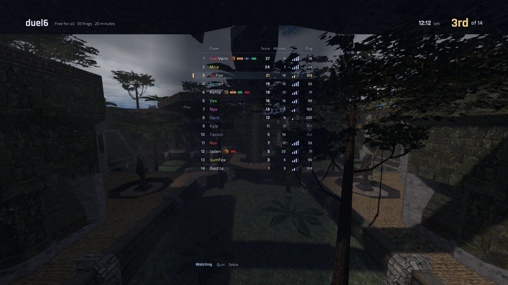
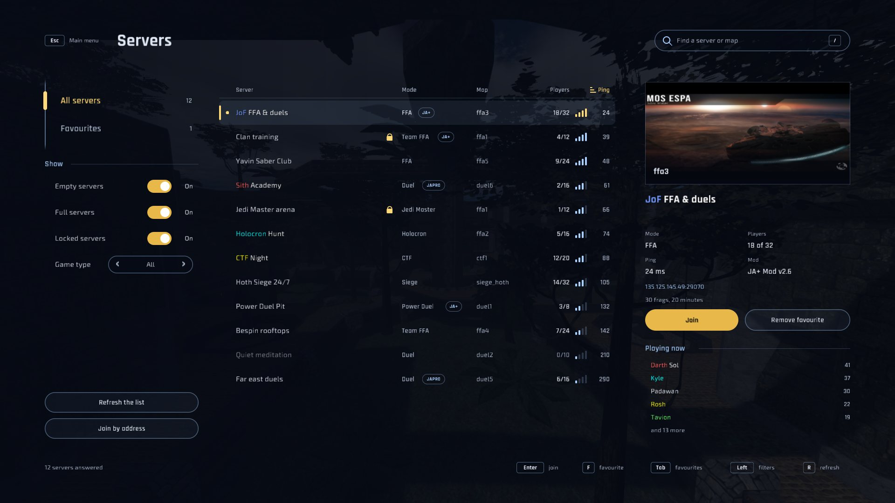
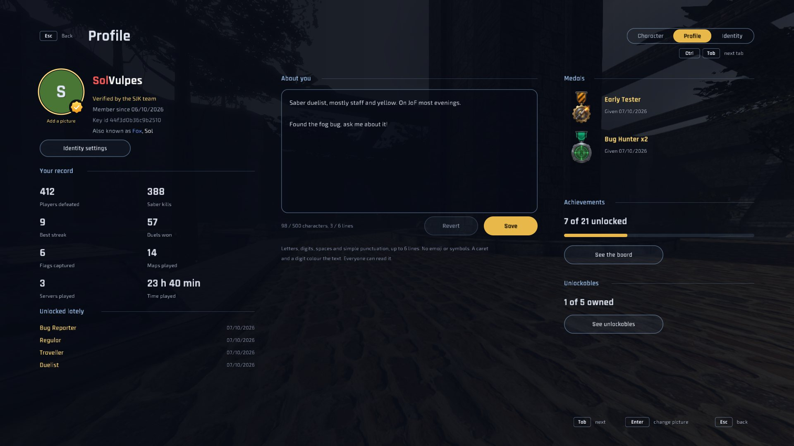
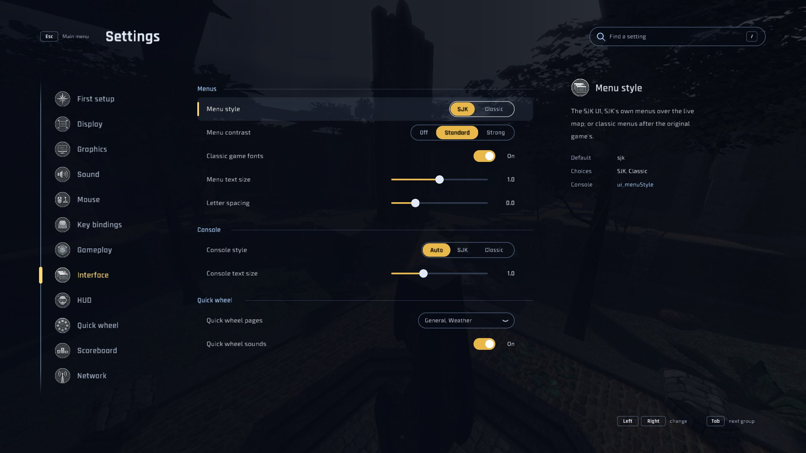

SJK, by Sol
Sol develops SJK and decides where it goes: the SJK UI, the classic menus, the HUDs, JA+ and JoF support, nameplates, weather and the rest of what this page shows. The full record is in CREDITS.md.
Star Wars Jedi Knight: Jedi Academy multiplayer
Sol JK · Alpha
SJK is Sol's vision of Jedi Academy, developed by Sol.

ui/hud.menu.^8/^9 colours.
g_debugMelee kicks and wall holds, the grapple hook and duel pass-through, without snap-backs.serverconfig and pluginDisableConsole commands as JA+ players know them.


SJK aims to be a true JKA+: everything players expect from today's community clients, from the retail look and feel to mod servers such as JA+ and modern screens, in a client that stays clean and fast. No bloat: every feature has to earn its place and its frame time, and the original game's behaviour comes first.
Once the client is solid, a JoF edition of SJK will follow for the JoF community.
Frames rendered by the SJK client itself, on the game's own data.
Release notes live on the releases page.
A legally owned copy of Star Wars Jedi Knight: Jedi Academy (Steam, GOG or disc) and Windows 10/11 x64 or Linux x64 with a working graphics driver. SJK ships no game assets.
Download the ZIP for your platform and extract all of it into the
game's GameData folder, beside base:
GameData/
├─ base/ (assets0-3.pk3)
├─ sjk.exe ← start
├─ sjk-server.exe
└─ README-SJK.txtOn Steam: right-click Jedi Academy › Manage › Browse local files › GameData.
Start sjk. No path or setting is needed. Windows may warn
about an unrecognised app because the builds are not code-signed; choose
More info › Run anyway if you trust the download (checksums are in the
release).
Settings, binds, screenshots and demos live in GameData/SJK/. SJK opens
on the SJK UI; First setup or Settings › Interface › Menu style switches to the classic
menus. To update, replace the executables and keep the SJK folder.
SJK identifies as a JA+ plugin client. JA+ puts new players in its alternate
dimension, where the grapple is off: use /amAltDim to leave it.
serverconfig lists the server's JA+ options.
Install Rust 1.88+, then cargo build --release -p sjk-viewer -p
sjk-dedicated, which builds sjk and sjk-server. See the README
for platform notes and the dedicated server.
Sol develops SJK and decides where it goes: the SJK UI, the classic menus, the HUDs, JA+ and JoF support, nameplates, weather and the rest of what this page shows. The full record is in CREDITS.md.
Creyon has 24 pull requests merged into SJK, most of them matching EternalJK: the third-person camera, crosshairs, dismemberment, effects, scopes and symbols in names. Lumaya made saber blades stop at walls (#24), and added a free camera (#29), a timed player peek (#28), the saber body in first person (#26), and U as the key for a private message to the player under the crosshair (#25).
Found a bug or have an idea? Use Report a bug in the client, or open an issue on the issue tracker. The source is on GitHub.
SJK is free software under the GPL-2.0-only license. It began in October 2026 as a modified version of JKR, an engine by Bishop. Copyright © 2026 Sol-Vulpes, Bishop-R and the JKR contributors; copies and modified versions keep the notice and credits, and use their own name and emblem. Every release includes its matching source snapshot, and the full source is on GitHub. Star Wars, Jedi Knight and Jedi Academy are trademarks of their respective owners. SJK is a fan project, not affiliated with or endorsed by Lucasfilm, Disney, Raven Software or Activision. No game files are included; the screenshots show SJK running on a legally owned copy of the game.